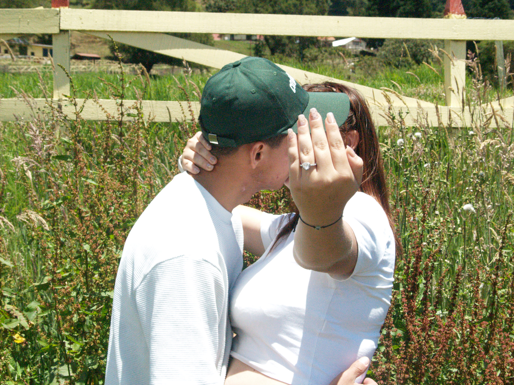
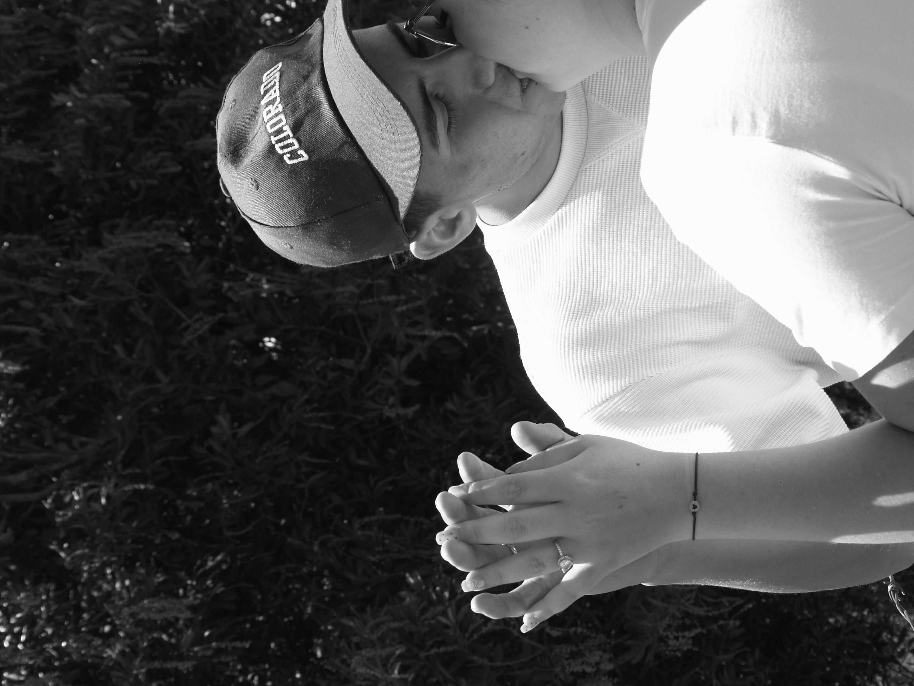
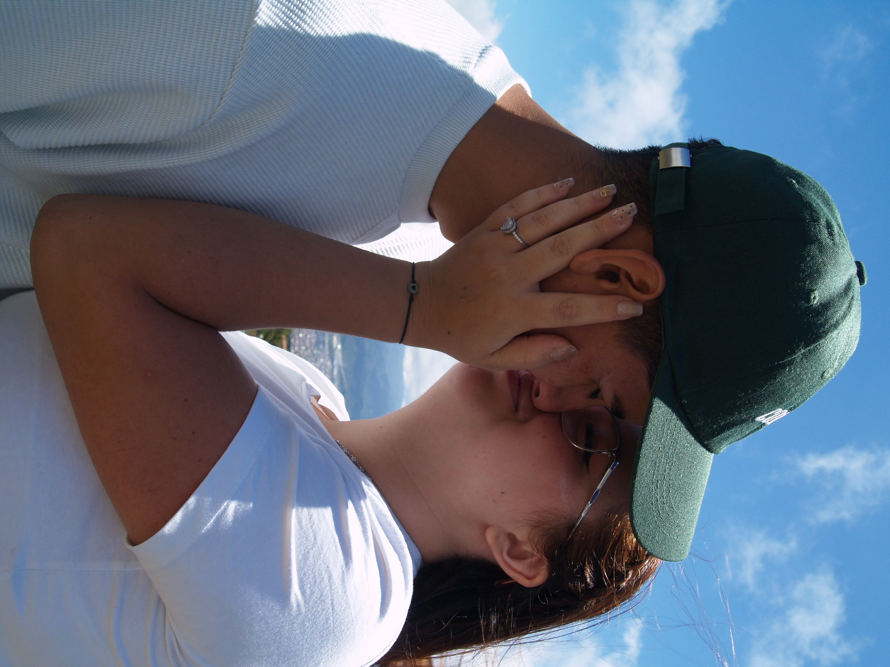

Arlin & Yoel
¡Nos casamos!
Con la bendición de Dios
11 de Abril 2026
2:00 PM
Iglesia Llanos de Santa Lucía
Ver ubicación 📍
“Porque cada historia de amor merece ser celebrada, te invitamos a compartir con nosotros el inicio de nuestro para siempre”
Con mucho cariño te invitamos a acompañarnos en este momento especial, donde celebraremos nuestra unión en la casa de Dios mediante la sagrada misa.


